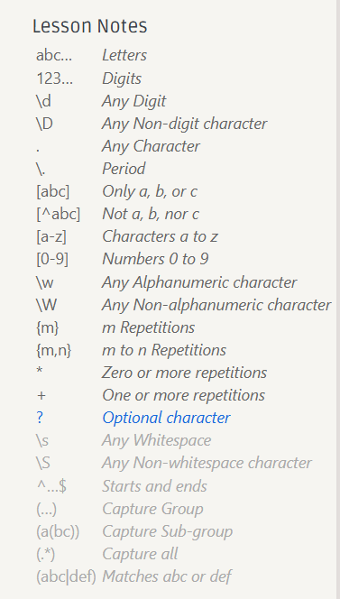

Data wrangling
regular expression
RegexOne - Learn Regular Expressions - Lesson 1: An Introduction, and the ABCs
直接上手用。

[abc] 匹配 abc 三个字符中的一个，要匹配多的，[abc]+
sed
以为
ssh的log文件 为例子，具体看视频
sed introduction
sed 是一个基于文本编辑器 ed 构建的 “流编辑器” 。在 sed 中，您基本上是利用一些简短的命令来修改文件，而不是直接操作文件的内容（尽管您也可以选择这样做）。相关的命令行非常多，但是最常用的是 s，即 替换 命令，例如我们可以这样写：
ssh myserver journalctl
| grep sshd
| grep "Disconnected from"
| sed 's/.*Disconnected from //'
上面这段命令中，我们使用了一段简单的 正则表达式。正则表达式是一种非常强大的工具，可以让我们基于某种模式来对字符串进行匹配。s 命令的语法如下：s/REGEX/SUBSTITUTION/flag, 其中 REGEX 部分是我们需要使用的正则表达式，而 SUBSTITUTION 是用于替换匹配结果的文本。
.*：表示任意数量的任意字符，.表示任意字符，*表示前面的字符可以出现任意次数（包括零次）。/.*Disconnected from /：表示正则表达式，匹配从行开始到 "Disconnected from "（包括空格）的所有字符。点号.表示任意字符，星号*表示前面的字符可以出现任意次数（包括零次），所以.*会匹配尽可能多的字符。- 第二个
/后面没有内容，表示用空字符串替换匹配到的文本。 - 最后一个
/后面没有标志，所以没有特殊的替换行为。
又：echo 'aba' | sed 's/[ab]//' or echo 'abc' | sed 's/[ab]//g'
sed and regex
正则表达式非常常见也非常有用，值得您花些时间去理解它。让我们从这一句正则表达式开始学习： /.*Disconnected from /。正则表达式通常以（尽管并不总是） / 开始和结束。大多数的 ASCII 字符都表示它们本来的含义，但是有一些字符确实具有表示匹配行为的“特殊”含义。不同字符所表示的含义，根据正则表达式的实现方式不同，也会有所变化，这一点确实令人沮丧。常见的模式有：
.除换行符之外的 “任意单个字符”*匹配前面字符零次或多次 （配合使用.*任意数量的任意字符）+匹配前面字符一次或多次[abc]匹配a,b和c中的任意一个(RX1|RX2)任何能够匹配RX1或RX2的结果^行首$行尾 （配合使用 's/^ ..... $//' 匹配整一行）
sed 的正则表达式有些时候是比较奇怪的，它需要你在这些模式前添加 \ 才能使其具有特殊含义。或者，您也可以添加 -E 选项来支持这些匹配。
一个有问题的例子：
echo 'an 17 03:13:00 thesquareplanet.com sshd[2631]: Disconnected from invalid user Disconnected from 46.97.239.16 port 55920 [preauth]' | sed 's/.*Disconnected from //'
output:
46.97.239.16 port 55920 [preauth]
* 和 + 在默认情况下是贪婪模式，也就是说，它们会尽可能多的匹配文本。
这可不是我们想要的结果。对于某些正则表达式的实现来说，您可以给 * 或 + 增加一个 ? 后缀使其变成非贪婪模式，但是很可惜 sed 并不支持该后缀。不过，我们可以切换到 perl 的命令行模式，该模式支持编写这样的正则表达式：
perl -pe 's/.*?Disconnected from //'
回到 sed，完整的操作
sed -E 's/.*Disconnected from (invalid |authenticating )?user .* [^ ]+ port [0-9]+( \[preauth\])?$//'
具体配合视频和 regex101: build, test, and debug regex 解析。
好好利用 regex 和 GPT
，需要用到 (.*) capture group 捕获组。
sed -E 's/.*Disconnected from (invalid |authenticating )?user (.*) [^ ]+ port [0-9]+( \[preauth\])?$//' | less
但是上面的处理还有问题，日志的内容全部被替换成了空字符串，整个日志的内容因此都被删除了。但是我们实际希望 user 后面的 name 保留下来，对此，我们可以使用“捕获组（capture groups）”来完成。被圆括号内的正则表达式匹配到的文本，都会被存入一系列以编号区分的捕获组中。捕获组的内容可以在替换字符串时使用（有些正则表达式的引擎甚至支持替换表达式本身），例如 \1、 \2、\3 等等，我们匹配第二个捕获组 (.*) 因此可以使用如下命令
sed -E 's/.*Disconnected from (invalid |authenticating )?user (.*) [^ ]+ port [0-9]+( \[preauth\])?$/\2/' | less
但是依然有问题，要是用户再搞怪，它的用户名为整条 log 文件怎么办？非贪婪模式。具体看视频。
sed -E 's/.*?Disconnected from (invalid |authenticating )?user (.*) [^ ]+ port [0-9]+( \[preauth\])?$//' | less
在正则表达式中，贪婪模式和非贪婪模式是指匹配时的两种不同行为：
- 贪婪模式：正则表达式在匹配时会尽可能多地匹配字符。也就是说，它会尝试找到最长的匹配字符串。
- 非贪婪模式：与贪婪模式相反，非贪婪模式会尽可能少地匹配字符。也就是说，它会尝试找到最短的匹配字符串。
sed 还可以做很多各种各样有趣的事情，例如文本注入：(使用 i 命令)，打印特定的行 (使用 p 命令)，基于索引选择特定行等等。详情请见 man sed!
more
但是 sed 并不是完美的工具，它在搜索和替换方面确实很有用，但我们不能只用 sed。
现在，我们已经得到了一个包含用户名的列表，列表中的用户都曾经尝试过登录我们的系统。但这还不够，让我们过滤出那些最常出现的用户：
ssh myserver journalctl
| grep sshd
| grep "Disconnected from"
| sed -E 's/.*Disconnected from (invalid |authenticating )?user (.*) [^ ]+ port [0-9]+( \[preauth\])?$/\2/'
| sort | uniq -c
sort 会对其输入数据进行排序。uniq -c 会把连续出现的行折叠为一行并使用出现次数作为前缀。我们希望按照出现次数排序，过滤出最常出现的用户名：
ssh myserver journalctl
| grep sshd
| grep "Disconnected from"
| sed -E 's/.*Disconnected from (invalid |authenticating )?user (.*) [^ ]+ port [0-9]+( \[preauth\])?$/\2/'
| sort | uniq -c
| sort -nk1,1 | tail -n10
补充
uniq命令在 Unix 和类 Unix 系统中用于报告或省略重复的行。-c参数是uniq命令的一个选项，用于显示每行的出现次数。具体来说，
uniq -c会为输入中的每行（在相邻的重复行中）显示该行及其出现的次数。这通常用于统计某个模式或文本行在文件中出现的次数。使用方法如下：
uniq -c [input_file]其中
input_file是你想要检查重复行的文件。例如，如果你有一个文件
example.txt，内容如下：apple banana apple orange banana apple运行
uniq -c example.txt将会得到：3 apple 2 banana 1 orange这里的数字表示每行文本在文件中出现的次数。注意，
uniq只能识别连续的重复行，所以如果文件内容如下：apple banana apple orange banana
uniq将不会将第一行的apple与第三行的apple视为重复，因此-c选项不会计数非连续的重复行。如果你想要忽略连续性的限制，可以使用
-f参数指定忽略前几个字段（或在这种情况下，忽略前一行）：uniq -c -f 1 example.txt这将统计文件中所有重复行的出现次数，无论它们是否相邻。
但是这样做还是比较麻烦，比较推荐到做法是先对文件进行排序后，再使用
uniq -c：sort example.txt | uniq -c | less
另外，sort -n 会按照数字顺序对输入进行排序（默认情况下是按照字典序排序 -k1,1 则表示“仅基于以空格分割的第一列进行排序”。,n 部分表示“仅排序到第 n 个部分”，默认情况是到行尾。就本例来说，针对整个行进行排序也没有任何问题，我们这里主要是为了学习这一用法！
如果我们希望得到登录次数最少的用户，我们可以使用 head 来代替 tail。或者使用 sort -r 来进行倒序排序。
相当不错。但我们只想获取用户名，而且不要一行一个地显示。
ssh myserver journalctl
| grep sshd
| grep "Disconnected from"
| sed -E 's/.*Disconnected from (invalid |authenticating )?user (.*) [^ ]+ port [0-9]+( \[preauth\])?$/\2/'
| sort | uniq -c
| sort -nk1,1 | tail -n10
| awk '{print $2}' | paste -sd,
我们可以利用 paste 命令来合并行(-s)，并指定一个分隔符进行分割 (-d)，（-s -d, 拼起来）
那 awk 的作用又是什么呢？
awk
sed 是一种基于行的 stream editor ，正则表达式也是逐行匹配的，自然也有基于列的 stream editor：awk
awk 其实是一种编程语言，只不过它碰巧非常善于处理文本。关于 awk 可以介绍的内容太多了，限于篇幅，这里我们仅介绍一些基础知识。
首先， {print $2} 的作用是什么？ awk 程序接受一个模式串（可选），以及一个代码块，指定当模式匹配时应该做何种操作。默认当模式串即匹配所有行（上面命令中当用法）。
在代码块中，$0 表示整行的内容，$1 到 $n 为一行中的 n 个区域，区域的分割基于 awk 的域分隔符（默认是空格，可以通过 -F 来修改）。在上面的例子中，我们的代码意思是：对于每一行文本，打印其第二个部分，也就是用户名。
111 abc
100 edd
98 djao
82 dapk
....
// match abc, edd...
让我们康康，还有什么炫酷的操作可以做。让我们统计一下所有以 c 开头，以 e 结尾，并且仅尝试过一次登录的用户。
| awk '$1 == 1 && $2 ~ /^c[^ ]*e$/ { print $2 }' | wc -l
让我们好好分析一下。首先，注意这次我们为 awk 指定了一个匹配模式串（也就是 {...} 前面的那部分内容）。该匹配要求文本的第一部分需要等于 1（这部分刚好是 uniq -c 得到的计数值），然后其第二部分必须满足给定的一个正则表达式。代码块中的内容则表示打印用户名。然后我们使用 wc -l 统计输出结果的行数。
不过，既然 awk 是一种编程语言，那么则可以这样：
BEGIN { rows = 0 }
$1 == 1 && $2 ~ /^c[^ ]*e$/ { rows += $1 }
END { print rows }
BEGIN 也是一种模式，它会匹配输入的开头（ END 则匹配结尾）。然后，对每一行第一个部分进行累加，最后将结果输出。事实上，我们完全可以抛弃 grep 和 sed ，因为 awk 就可以 解决所有问题。至于怎么做，就留给读者们做课后练习吧。